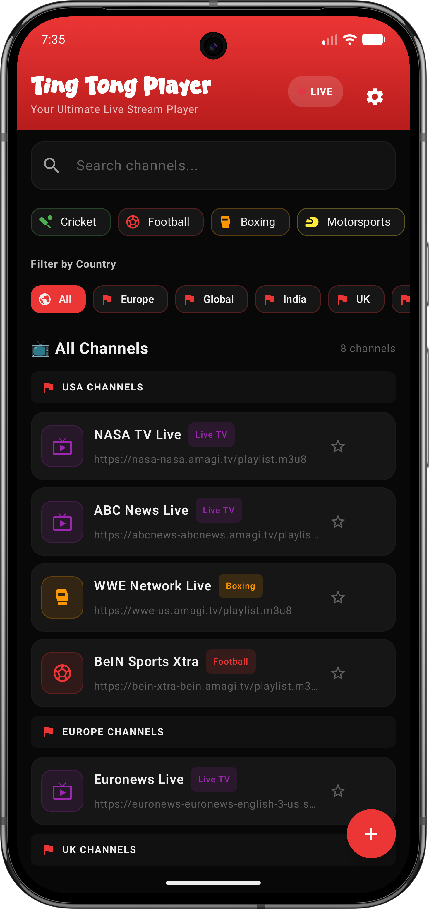

A safe, ad-free media client designed for personal video streaming. Play any M3U playlist link with picture-in-picture, proxy tunnels, and zero data tracking.

Ting Tong Player is presented as the official safe app build. It is designed without analytics, account login, hidden telemetry, or personal data collection.
The live count is read from GitHub Releases, so website redeploys do not delete the download history.
Your playlists, favorites, and custom links stay on your own device in local storage.
Use the download button on this page for the official APK and avoid unknown mirrors or modified copies.
Designed for performance, safety, and ultimate customizability.
Automatic web block scripts clean all redirect popups, banner ads, and malicious scripts from stream hosters.
Multitask easily on your phone. Exit the app while watching and the stream automatically scales down to a floating screen.
We collect no history, no analytics, and no logins. All playlist links and custom streams are stored on your device's offline Room database.
Safely route heavy streaming segments through your custom HTTP Proxy address to protect your personal IP address from server trackers.
Organize your video streams easily with color-coded category chips to quickly sort and locate your links.
Backup all custom added streams to your clipboard as an encrypted JSON string and restore them instantly on any device.